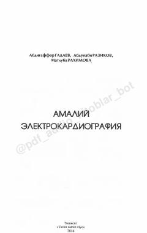

AEElektrokardiografiya usulining nazariy va amaliy asoslari bo'yicha shifokorlar uchun qo'llanma.
Ushbu qo'llanma elektrokardiografiya (EKG) usulining nazariy va amaliy asoslarini o'zbek tilida sodda va tushunarli tarzda yoritib beradi. Kitobda EKG olish tartibi, yurak ritmi va o'tkazuvchanligi buzilishlarining tahlili hamda bolalarda EKG o'tkazish xususiyatlari batafsil bayon etilgan. Asar amaliyotchi shifokorlar va kardiologiya yo'nalishidagi magistrlar uchun mo'ljallangan.